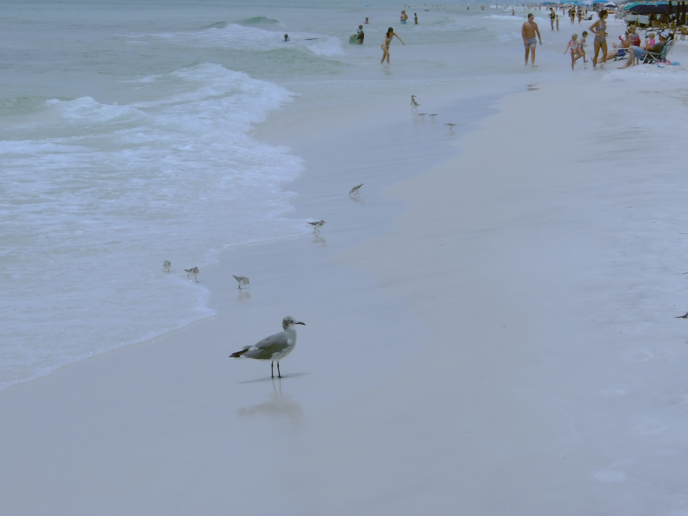

<!-- All this stuff just tells the computer what this file is and what to do with it. -->
<!DOCTYPE html>
<html lang="en-US">
  <Lisboa and More>
    <!-- Change the space within <title><title> to match the title of your post -->
    <title>Lisboa and More/title>
    <meta charset="utf-8" />
    <!-- Change the space within content="" to match the description of your post -->
    <meta name="description" content="My first month or so in Lisbon!" />
    <link rel="stylesheet" href="../rar.css" />
    <link rel="icon" href="../images/iberia.png" />
  </head>
  <body>
    <header>
      <div class="container" id="logo">
        
      </div>
      <div id="title">
        <p>
          <strong
            >Rebecca, Amanda and Rowland's blog on the Iberian Peninsula</strong
          >
        </p>
        <nav>
          <a href="../index.html">Home</a> <a href="../posts.html">Posts</a> <a href="../gallery.html">Gallery</a>
        </nav>
      </div>
    </header>
    <hr />
    <!-- Below is where all of your writing will actually happen-->
    <main>
      <!-- Change the area between <h1><h1> to the title of your blog -->
      <h1>Recap</h1>
      <!-- This is the date of your post. In the quotes of datetime="" put your date in year-month-day (ex. 2001-01-01). Then, between the ><, put how you want the date to appear -->
      <time datetime="2025-10-10">October 10, 2025</time>
      <!-- This is where you write the content of your blog! Every time you want a new paragraph, put it in between <p><p>. -->
      <p>Hey blog! So much has happened since I last spoke to you. I want to give you a very quick recap, and then I will share a few details for those interested.</p>
      <p>I took a grueling 6 and half hour flight here in which I was situated next to a very young baby. I did not get up once during the flight, which is actually a great life hack on growing immediate fondness to a place: Lisbon was magical when I got there because I could stand up and use the bathroom. Then I got to meet all of my peers! I could not be luckier with this group. I legitimately enjoy the company of each and every 14 of my classmates. I have traveled all over, to the Acores, Faro, Spain, and more! The first thing I learned was that my new home is the "city of 7 hills". That is not a joke. I feel like I am very familiar with each of these monstrous hills. I have had a lot of espresso and found my new favorite soda: kima. I have learned a miniscule amount of Portugal. Oh fine I'll do a little for you! Eu chamo-me Rebecca e eu sou dos Estados Unidos. I have seen SO many dogs! I'd hate to bore you with ALL of the nitty gritty, so blah blah blah. Basically, I love Lisbon. </p>
      <p> Here's a short list of how I've changed: I milked a goat in Spain, I played an ungodly amount of imposter, I stepped up my recylcing game, I attempted to wash my clothes, I learned that American Express cards are useless in Portugal, I learned how to conquer a fortress, I met a dog named Jimmy, I got very carsick in a bus, I took dramamine for the first time, I cooked two apple tarts, I ate many almond croissants, I was letdown by the airline known as Easy Jet, and I made 14 friends!<p>
      <p> Lastly for this update, I have a poem I wrote while in the Acores. For context, the first hurricane since 2012 passed over the Acores while my study abroad group was there. Enjoy!<p>
      <p> Advice for a Tropical Storm- When the wind blows in your face, blow all of the air out of your lungs, and see whether you or the wind tips over first. Read a memoir that is just as rainy as the sky which got your flight delayed. Admire the sturdy nature of your "VIP" bus! Wonder if whales use big waves as their alarm clocks. And, wear a hat!<p>
<!-- This is a figure. It allows you to put a caption on an image -->
      <figure class="container">
        <!-- The  is the image file. In src="../images/" put the image name. In alt="" put a description. Between <figcaption><figcaption> put the image caption -->
        
        <hr />
        <figcaption>ever seen cooler birds?</figcaption>
      </figure>
      <!-- Order everything as you please! Add new paragraphs and images however much you want. Good luck! -->
      <!-- Everything below here you can ignore. -->
<script src="https://utteranc.es/client.js"
        repo="peninsulablog/peninsulablog.github.io"
        issue-term="pathname"
        theme="github-light"
        crossorigin="anonymous"
        async>
</script>
    </main>
    <!-- You're all done! All the stuff below is the footer. -->
    <br />
    <footer>
      <form>
        <p>Sign up for email alerts!</p>
        <p>
          <label for="email">E-mail: </label>
          <input
            type="email"
            id="email"
            name="email"
            required
            cols="40"
            rows="1"
            value="Your e-mail here"
          />
        </p>
        <p><button>Submit</button></p>
      </form>
    </footer>
  </body>
</html>
